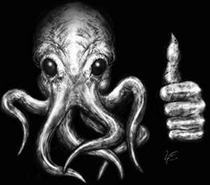

¡¡iä iä!!! cthulhu fhtagn ph'nglui mglw'nafh cthulhu r'lyeh wgah'nagl fhtagn
Educación
-
Universidad de Miskatonic - Arkham
Titulo: Rey Supremo y Devorador de todo
Magister: Danza Afroamericana interpretativa
Habilidades
-
Habilidades de Oficina
administracion de grupos de trabajo, coordinación de equipos y sectas, y sacrificios rituales
Conocimiento de Computacion
Usuario de Office, nivel Basico
Experiencia
-
Culto del final de los tiempos Líder Supremo - Baton Rogue, LA - 1926-2010
- Instigador y ganador de la maratón de sacrificios de vírgenes
- coordinación y administración de cultistas y la expansión del mismo
- Proveer la muerte lenta y dolorosa a todos a quienes me oponen
El Pollo Caballo Mesero - Santiago Centro - 2017
- ganador del trabajador del mes durante todos los meses de mi estadia
- disminución de quejas
Edificio los cóndores Conserje/nochero - Las Condes - 2017
- Ninguna de los gastos comunes atrasados
- Trabajos de jardinería y gasfiteria
Hobbies
- Dominación mundial, sacrificios ritualisticos, tejido en crochet y paseos por la playa al atardecer
- También me gusta el Cine y armar aviones a escala, ademas de participar de torneos de danza
Disponibilidad
- Renta de acuerdo al mercado y disponibilidad inmediata